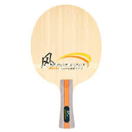
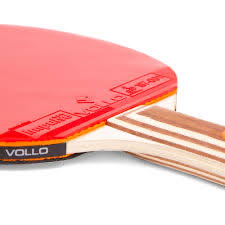
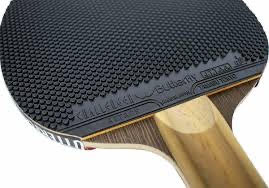
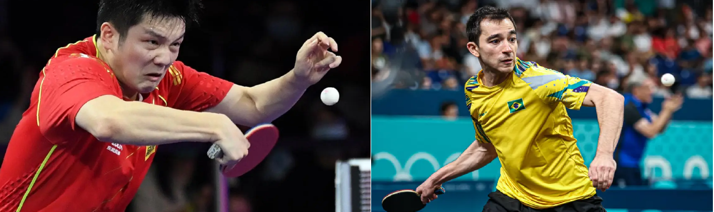
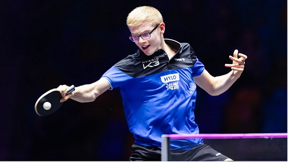

>
Faça a sua raquete de ping pong
Qual é a raquete ideal para você?
Índice
Nosso site lhe deixará por dentro do mundo das raquetes. Você sairá daqui sabendo tudo sobre:
- Borrachas
- Pegadas
Vamos começar?
1) Borracha
Toda raquete é moldada utilizando (ou não) uma borracha em mente, possuindo vários tipos:
1.1) Sem borracha
A raquete sem borracha aplica pouco efeito, pois possue pouca ou nenhuma borracha.
- Efeito: mínimo.
- Aparência: old school.
- Todos podem usar, amigável para novos jogadores.

"Pau pra toda obra." - Miranda,Gabriel.
1.2) Com borracha
A raquete padrão. Possui duas variações:
1.2.1) Sem pino
A clássica das clássicas. Não tem como errar.
- Efeito: Moderado-Forte.
- Aparência: Padrão.
- A mais comum e também mais abrangente.

"lisinha igual uma garrafinha" - Acosta, Alberto.
1.2.2) Com pino
Uma variação destinada ao uso mais defensiva
- Efeito: Reverte/desfaz efeitos
- Aparência: Excepcionalmente exótica.
- Potencialmente difícil de lidar.

"O melhor ataque é a defesa" - Alencar, Gabriel.
2) Pegada
Todo jogador, iniciante ou profissional, possui um tipo de pegada
2.1) Pegada clássica
A faca e o queijo do ping pong.
- Ponto forte:Pode fazer um backhand com mais facilidade e sendo mais agressivo.
- Jogadores famosos:Hugo Calderano e Fan Zhendong.

"Tem um motivo para ser clássico." - Acosta, Alberto.
2.2) Pegada caneta
- Ponto forte:Pode fazer um forehand com mais facilidade e sendo mais agressivo.
- Jogadores famosos:Samuel Salheb e Yago Schnorr (por enquanto).

""
2.3) Pegada classineta
- Ponto forte: Forehand e backhand extremamente fortes.
- Jogadores famosos: Félix Lebrun.

""
E aí? descobriu como seria a raquete perfeita pra você? Esperamos ter ajudado!